Du ciel au sous sol, le Gabon regorge d'innombrables richesses.
Les couleurs du Drapeauvertjauneetbleu représentent d'ailleurs certaines d'entre elles.
La forêt
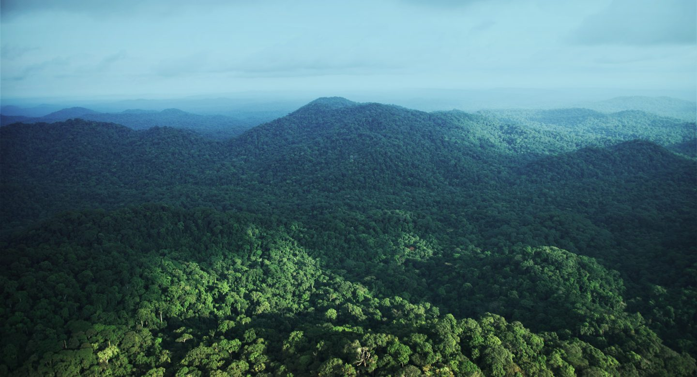
L'équateur
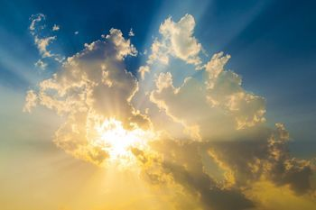
L'océan
A/ L'exploitation progressive des richesses du Gabon
1. L’exploitatoin par les populations.
Pendant la période précoloniale (avant le XIXᵉ siècle). Avant l’arrivée des Européens, les populations locales exploitaient déjà certaines ressources :
Commerce ( voire ,huile de palme)
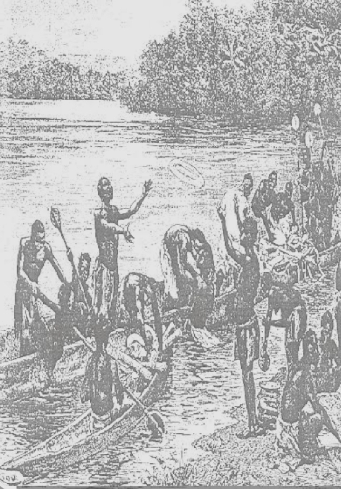
Bois
Produits agricoles
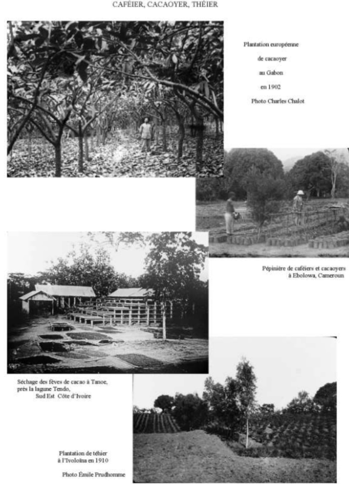
Mais cette exploitation restait artisanale et limitée.
2.L’exploitation coloniale
De la fin du XIXᵉ au début du XXᵉ siècle débute l’exploitation coloniale.
L’exploitation intensive commence avec la colonisation française, notamment après :
la prise de contrôle par la France;
l’intégration du Gabon dans l’Afrique Équatoriale Française (AEF)
3.Les premières grandes richesses exploitées au Gabon:
l’ivoire.
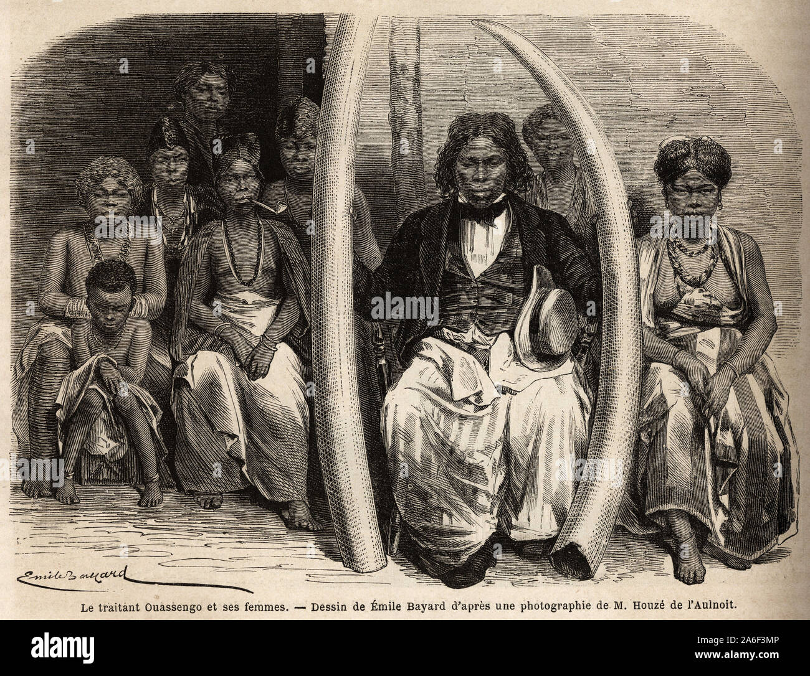
le bois (okoumé) → utilisé pour le contreplaqué;
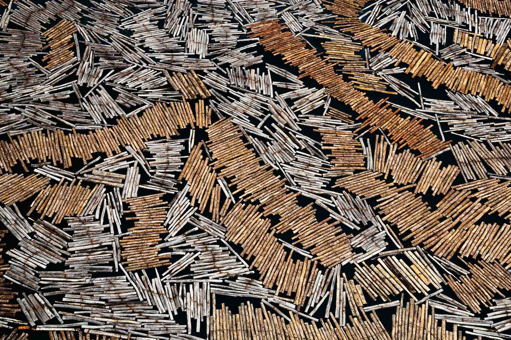
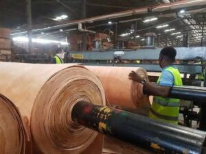
le caoutchouc
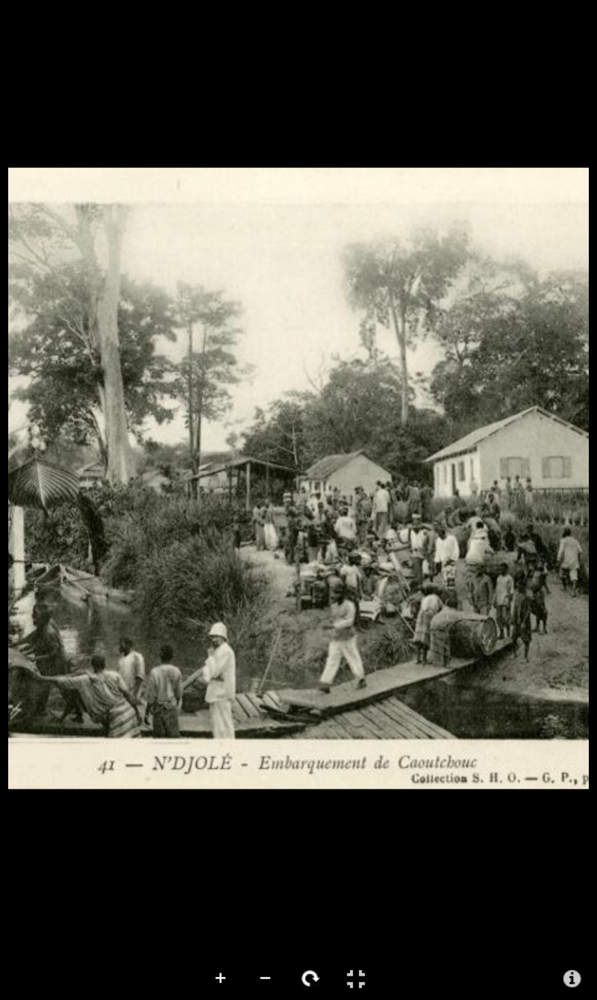
4.L’intégration française en Afrique centrale
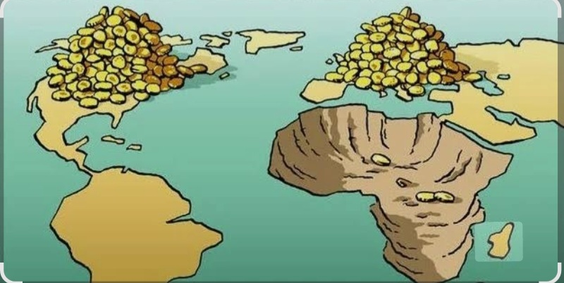
Cette période marque le début d’une exploitation organisée et industrielle.
L’intégration de la France en Afrique centrale est un phénomène historique, politique, économique et culturel profondément enraciné.
Elle ne correspond pas à une “intégration régionale” classique (comme celle entre États africains), mais plutôt à une influence durable héritée de la colonisation et maintenue à travers divers mécanismes après les indépendances.
a. Une intégration héritée de la colonisation
L’intégration française en Afrique centrale trouve son origine dans la période coloniale (fin XIXe – milieu XXe siècle).
La France contrôlait plusieurs territoires regroupés dans l’Afrique équatoriale française (AEF)
Ces territoires incluaient notamment :
le Gabon
le Congo
la République centrafricaine
le Tchad
Cette période a permis à la France de mettre en place :
des structures administratives
des systèmes économiques orientés vers l’exportation
une langue commune : le français
Même après les indépendances dans les années 1960, ces bases sont restées.
De grandes entreprises françaises sont présentes dans la région :
TotalEnergies (pétrole)
Bolloré (transport, ports)
Orange (télécommunications)
La France est liée à la monnaie utilisée dans plusieurs pays d’Afrique centrale :
Le franc CFA (XAF), utilisé dans la zone CEMAC
👉 Cela suscite des débats sur la souveraineté économique de ces pays.
b.Les limites et critiques
L’intégration française en Afrique centrale est critiquée :
Dépendance économique vis-à-vis de la France
Influence politique jugée excessive
Débat autour de la “Françafrique” (relations jugées néocoloniales)
Contestation du franc CFA
Certains pays cherchent aujourd’hui à diversifier leurs partenaires (Chine, États-Unis, etc.).
L’intégration de la France en Afrique centrale est le résultat d’une longue histoire et reste très visible aujourd’hui dans les domaines économique, politique et culturel.
Cependant, cette présence est de plus en plus remise en question, dans un contexte où les États africains cherchent à renforcer leur autonomie et à diversifier leurs relations internationales.
5.Exploitation minière et pétrolière (XXᵉ siècle)
-Manganèse:
L’exploitation à grande échelle du manganèse débute à partir des années 1950.
Très abondant (parmi les plus grandes réserves mondiales).
Principal site : Moanda.
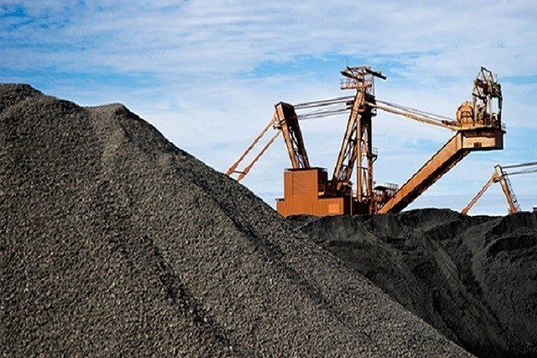
L’exploitation à grande échelle du manganèse débute à partir des années 1950.
Région : Moanda
-Pétrole:
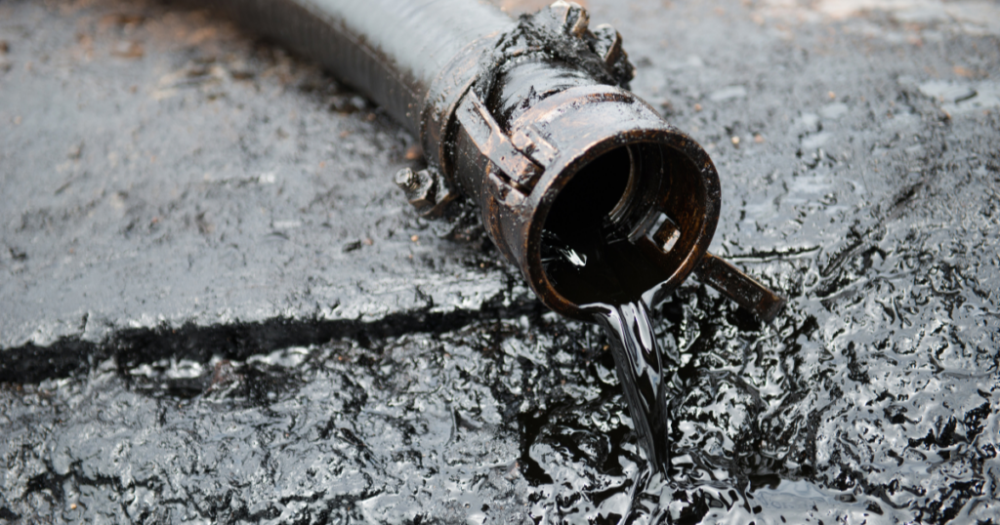
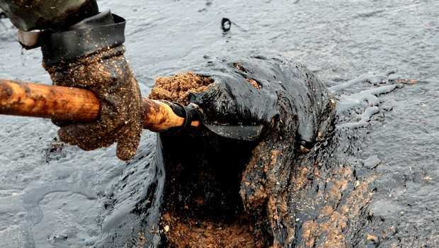
L’exploitation du pétrole débute dans les années 1960 (juste avant et après l’indépendance en 1960).
Le pétrole devient la principale richesse du pays.
Exploité surtout au large (offshore) et dans certaines zones terrestres.
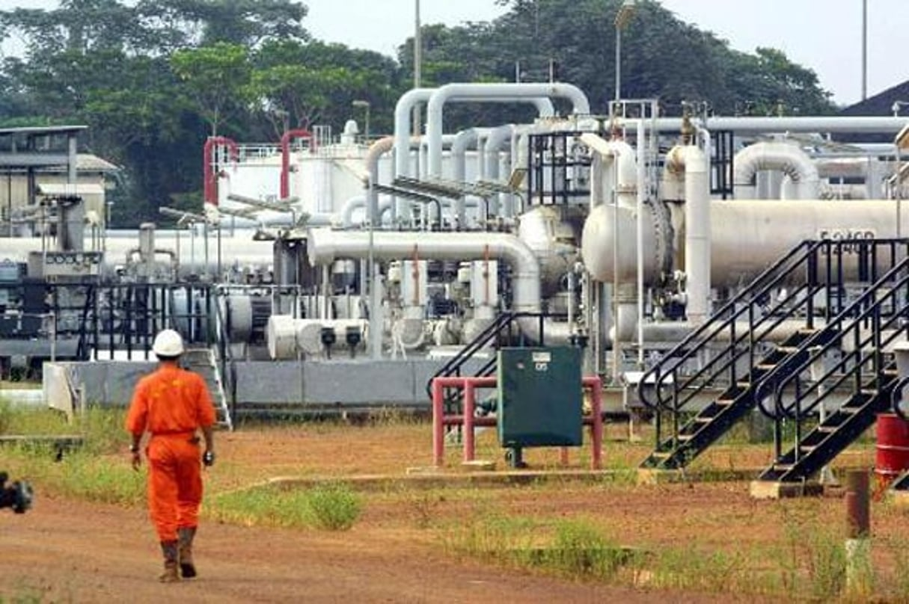
-Uranium:
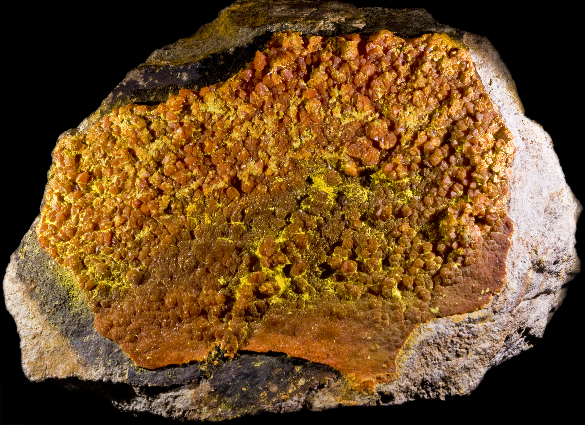
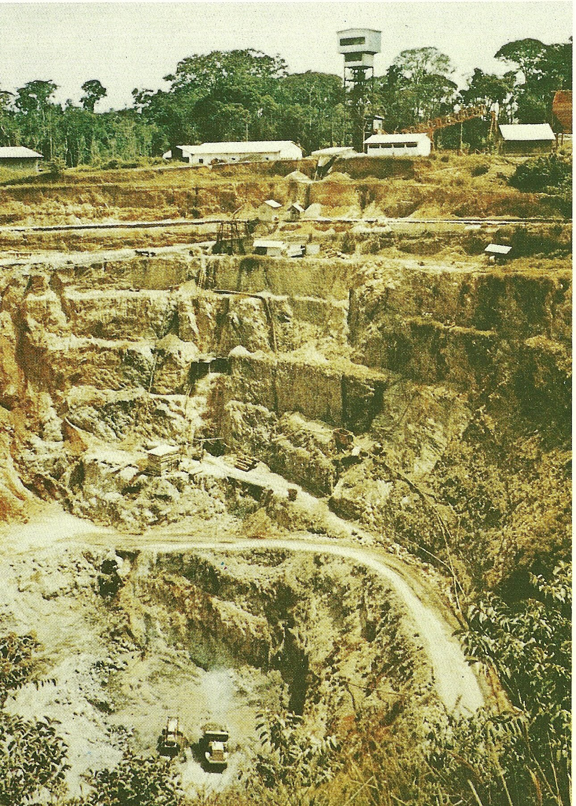
Exploité dans la région de Mounana (années 1960–1990).
Activité arrêtée aujourd’hui.
Fer:
Important gisement (ex : région de Belinga).
Encore peu exploité à grande échelle.
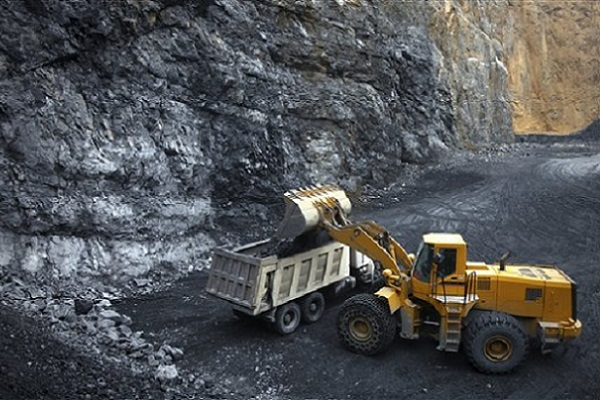
Or
Présent dans plusieurs régions.
Exploitation artisanale et industrielle.
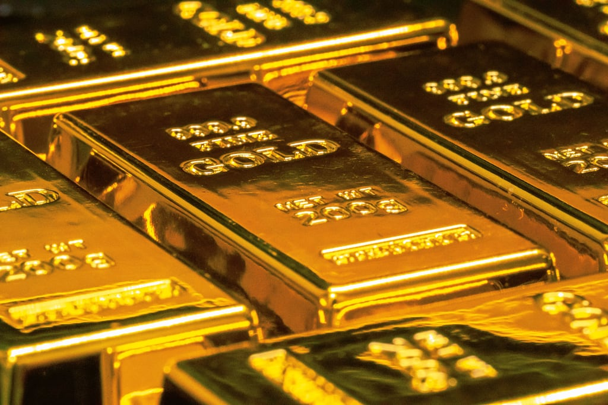
Gaz naturel:
Souvent associé au pétrole.
Encore sous-exploité mais en développement.
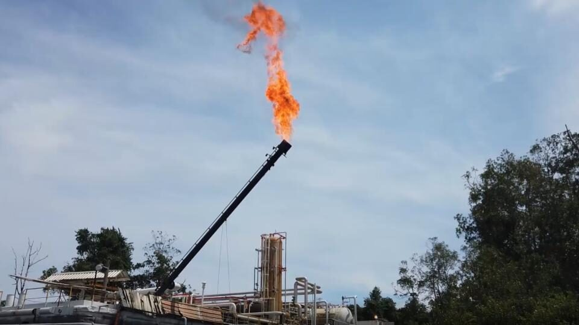
Plomb et zinc:
Présents en quantités plus modestes.
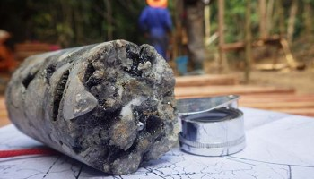
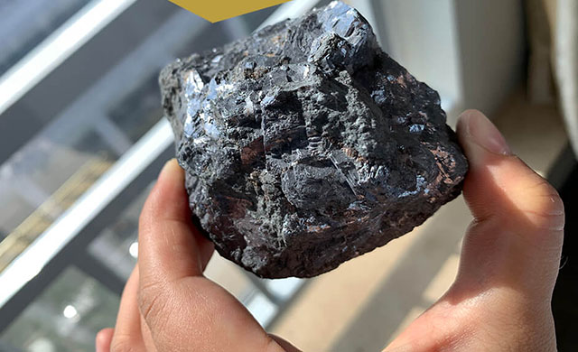
Cuivre:
Gisements identifiés mais peu exploités.
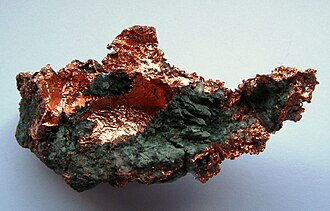
Le cuivre au Gabon se trouve principalement dans la province de la Nyanga, surtout vers Milingui mais il reste rarement exploité seul et apparaît souvent avec d’autres minerais.
Pendant longtemps, le pouvoir a été concentré entre peu de mains, notamment sous Omar Bongo et ensuite Ali Bongo Ondimba.
Conséquences:
Une partie de l’argent du pétrole est mal utilisée ou détournée, peu de transparence dans la gestion des revenus.
➡️ Résultat :
l’argent ne profite pas à toute la population.
🛢️ 2. La “malédiction des ressources”
C’est un phénomène connu en économie (appelé malédiction des ressources).
👉 Idée principale:
Les pays riches en ressources naturelles ont souvent :
plus de corruption;
moins de diversification économique;
plus d’inégalités.
Parce qu’il est “facile” de vivre du pétrole sans développer d’autres secteurs..
3.Manque de diversification économique
Le Gabon dépend fortement du pétrole et des matières premières.
Mais il développe peu :
l’agriculture;
l’industrie locale;
les PME.
Résultat
:
peu d’emplois pour les jeunes,
économie fragile.
👥 4. Inégalités sociales élevées
Une petite partie de la population (élites, hauts fonctionnaires, grandes entreprises) capte une grande part des richesses.
Pendant ce temps ,
beaucoup de Gabonais ont un accès limité
à l’emploi,
aux soins et
à une l’éducation de qualité.
Cela crée un écart très important entre riches et pauvres.
🏗️ 5. Mauvaise gestion des investissements publics
Même si l’État a de l’argent ,
certains projets sont mal planifiés
,abandonnés
ou concentrés dans certaines zones (ex : Libreville
).
Résultat :
développement inégal entre les régions
infrastructures, insuffisantes ailleurs.
🌍6. Dépendance aux entreprises étrangères
Les grandes compagnies pétrolières ou minières sont souvent étrangères.
Donc
une partie des profits quitte le pays,
peu de transformation locale (ex : export du bois brut au lieu de produits finis).
✅ Résumé en une phrase :
Le Gabon pourrait être très prospère pour toute sa population, mais la corruption, la dépendance au pétrole et les inégalités empêchent une vraie redistribution des richesses.
⚖️ Conclusion simple:
Le problème du Gabon n’est pas le manque de richesses
mais plutôt la manière dont elles sont gérées et réparties.
Observations:
Le Gabon est un pays riche en ressources naturelles comme le pétrole, le bois et les minerais, exploitées depuis près d’un siècle. Pourtant, une grande partie de sa population vit encore dans la précarité.
Cette situation s’explique par plusieurs facteurs historiques, économiques et politiques.
Tout d’abord, l’histoire coloniale a fortement influencé l’économie du pays. Sous la domination de la France, les ressources du Gabon étaient principalement exploitées pour enrichir la métropole, sans réel développement local.
Après l’indépendance, cette organisation économique a perduré, avec une économie toujours tournée vers l’exportation de matières premières brutes.
Ensuite, les richesses du Gabon sont concentrées entre les mains d’une minorité. Une élite politique et économique capte une grande partie des revenus, notamment sous des régimes comme celui de Omar Bongo.
Cette mauvaise répartition empêche une redistribution équitable des richesses vers l’ensemble de la population.
De plus, la corruption et la mauvaise gestion des fonds publics limitent les investissements dans les services essentiels. Une partie importante des revenus issus du pétrole n’est pas utilisée pour améliorer les conditions de vie des citoyens, ce qui freine le développement du pays.
Par ailleurs, les secteurs dominants comme le pétrole et les mines créent peu d’emplois, car ils sont très mécanisés. Cela entraîne un chômage élevé, notamment chez les jeunes, et limite les opportunités économiques pour la population.
Aussi, le développement est inégal selon les régions. Les grandes villes comme Libreville concentrent la majorité des infrastructures et des investissements, tandis que les zones rurales restent peu développées.
Conséquences:
la précarité persistante au Gabon ne s’explique pas par un manque de richesses, mais par une mauvaise gestion, une forte inégalité dans leur répartition et un modèle économique peu créateur d’emplois.
Quelques solutions:
Pour améliorer la situation, il serait nécessaire de mieux redistribuer les revenus, de diversifier l’économie et d’investir davantage dans le développement social.
Les dirigeants ont-ils la volonté et la capacité de sortir le peuple de la précarité gabonais ?
nos commentaires pour plus tard...
LA DETTE DU GABON
💰 1. Qu’est-ce que la dette du Gabon ?
La dette correspond à l’argent que l’État gabonais doit rembourser à :
des banques d’autres pays
des organisations internationales
📊 2. Niveau de la dette
Le Gabon a une dette relativement élevée,
environ 60 à 70 % du PIB (variable selon les années). Cela représente plusieurs milliards d’euros.
Ce niveau est considéré comme élevé pour un pays riche en pétrole.
📈 3. Pourquoi le Gabon s’endette ?
🛢️ a) Dépendance au pétrole
Le Gabon dépend fortement du pétrole.
Quand les prix baissent,
les revenus de l’État diminuent .
le pays doit emprunter pour continuer à fonctionner
🏗️ b) Grands projets coûteux
L’État finance des routes des infrastructures des projets publics maaisées projets sont arfois mal planifiés
ou trop coûteux par conséquent cela augmente la dette.
💸 c) Mauvaise gestion
gaspillage
corruption
dépenses publiques élevées
👉 Résultat :
plus d’emprunts nécessaires.
🌍 d) Crises économiques Exemples :
baisse du prix du pétrole
pandémie de COVID-19
Ces crises ont réduit les recettes et augmenté les dépenses.
⚠️ 4. Les conséquences de la dette
❌ a) Moins d’argent pour la population
👉 Une partie du budget sert à :
Rembourser la dette
payer les intérêts
➡️ Donc moins d’argent pour les écoles les hôpitaux et les infrastructures
❌ b) Risque économique
👉 Si la dette devient trop élevée le pays
perd de confiance des investisseurs et rencontre des difficulté à emprunter
❌ c) Dépendance extérieure
👉 Le Gabon dépend de créanciers internationaux comme le fonds monétaire international (FMI)
➡️ Ces institutions imposent parfois des réformes économiques.
✅ 5. Les solutions possibles
✔️ Réduire la dépendance au pétrole ;
✔️ Mieux gérer les finances publiques ;
✔️ Lutter contre la corruption ;
✔️ Développer d’autres secteurs économiques ;
✔️ Augmenter les recettes (impôts mieux collectés) .
⚖️ Conclusion
👉 Le Gabon est un pays riche, mais sa dette montre que :
les richesses ne sont pas toujours bien gérées
l’économie est fragile
✅ Résumé simple :
La dette du Gabon est élevée parce que le pays dépend du pétrole, dépense beaucoup et gère parfois mal ses ressources, ce qui limite ensuite les bénéfices pour la population.


.jpg)
.jpg)